まず押さえること
- 患者、薬剤・輸液、目的、濃度、量、投与経路、速度、開始時刻を照合
- アレルギー、腎・心機能、電解質、体液量、投与部位を確認
- 処方に必要な速度または投与時間がなければ推定せず、確認する
- 高警戒薬は院内基準に沿った独立ダブルチェックを行う
輸液の目的を分ける
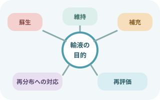
5つの目的と再評価
蘇生、維持、補充、再分布への対応、再評価。
目的が違えば液の種類、量、速度、観察項目も変わる。経口・経腸で満たせるなら静脈輸液を減らす。
投与前の照合
- 指示を読む
薬剤・輸液名、濃度、総量、経路、速度または投与時間、開始・終了条件。
- 患者と目的を確認
本人確認、アレルギー、病態、検査値、投与目的、現在の水分出納。
- 製剤と期限を確認
ラベル、外観、混濁・変色・漏れ、有効期限、調製日時、遮光・フィルタの要否。
- ルートを患者までたどる
接続先、ルーメン、三方活栓、クレンメ、フィルタ、配合変化、末梢・中心静脈の別。
- 機器を照合
専用セット、シリンジの製造元・容量、薬剤ライブラリ、流量、予定量、アラーム。
輸液速度と滴下計算
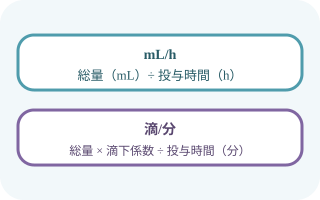
単位をそろえて計算
mL/h＝総量（mL）÷時間（h）
滴/分＝総量×滴下係数÷投与時間（分）
滴下係数は輸液セットの表示を確認する。
- 投与時間：12時間
- 500÷12＝41.7mL/h
- 設定は処方と院内ルールに従って丸め、終了予定時刻を再確認
「速度指定なし」を自動的に均等割りするのではなく、総量と明確な投与時間が指示されているか確認する。自然滴下では患者の体位、血管抵抗、バッグの高さで速度が変わるため、開始後も再測定する。
バッグから患者までたどる
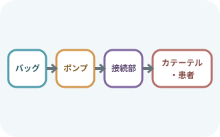
上流から下流へ一本ずつ
輸液バッグ、滴下筒、ポンプ、クレンメ、フィルタ、接続部、三方活栓、カテーテル、刺入部まで手と目で追う。
複数ルートは一度に見ず、一本ずつ薬剤ラベルと接続先を照合する。
- 滴下筒の液面、チューブ内の空気、屈曲、圧迫、漏れ
- 接続部の緩み、閉鎖、不要な接続、ルートの引っ張り
- 配合変化、同時投与可否、専用ルーメンの必要性
- 末梢ラインの刺入部、中心静脈ラインの固定・ドレッシング
- 患者移動・体位変換・引き継ぎ後にもう一度たどる
輸液ポンプ
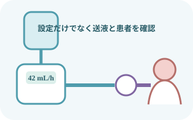
セット・設定・送液を確認
機器指定の輸液セットを正しい向きと位置に装着。
流量、予定量、積算量、開始表示、滴下・回路の動きを確認し、患者側クレンメの開放も見る。
- 機器と電源
点検済み表示、破損、電源、バッテリー残量、ポールへの固定を確認。
- 回路をプライミング
患者へ接続する前に空気を除去。ポンプ専用部を伸ばしたり傷つけたりしない。
- 正しく装着
チューブの向き、センサ部、ドア、フリーフロー防止機構を機種の手順で確認。
- 設定を照合
mL/hなど単位を含め、流量・予定量を指示と照合。薬剤ライブラリがあれば適切な領域・薬剤を選ぶ。
- 開始後に再確認
運転表示だけでなく、回路、刺入部、患者反応、終了予定時刻を確認する。
シリンジポンプ
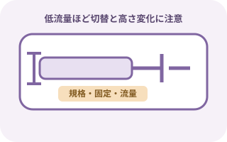
微量・高濃度ほど中断と急速注入に注意
適合するシリンジの製造元・容量を選び、外筒フランジと押し子を確実に固定。
低流量では開始遅延とルート内の残量が臨床効果へ影響する。
- シリンジラベル、薬剤名、濃度、調製時刻、患者名
- シリンジの製造元・容量設定と実物の一致
- 押し子・フランジの固定、ルート接続、三方活栓の向き
- ポンプと刺入部の高低差を急に変えない
- 専用ルート、デッドスペース、同時投与薬との相互作用
- 患者につないだまま早送り・プライミングを行わない
持続薬のシリンジ交換
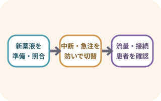
中断とボーラスを同時に防ぐ
循環作動薬などは短い中断でも状態が変化する。交換方法は薬剤、流量、半減期、ルート構成と院内手順で決める。
- 交換計画を確認
残量と交換時刻、処方、患者状態、次のシリンジ、代替ポンプの要否を確認。
- 新しい薬剤を照合
患者、薬剤、濃度、流量、経路、シリンジ規格、ラベルを独立して確認。
- 患者から切り離して準備
ルートを薬液で満たす操作や早送りは、患者へ流入しない状態で行う。
- 逆流・急速注入を防いで交換
必要なクランプ、二台法・重複法、切替順序は採用機器と院内手順に従う。鉗子でチューブを傷つけない。
- 切替後に患者を見る
流量、接続、運転表示、積算量、血圧・脈拍など薬剤に応じた反応を確認して記録。
アラーム対応
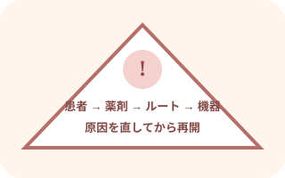
患者を見て、原因を直してから再開
消音・停止は原因解決ではない。投与中断が患者へ与える影響も同時に考える。
- 患者状態と薬剤中断の危険を確認し、送液を止める
- 患者側への流入を防ぐため、機種・回路に沿ってクランプ
- 接続外れ、バッグ空、滴下筒液面、上流からの空気混入を確認
- 患者へ押し流さず、無菌的に空気を除去してから再装着・再開
- 刺入部の腫脹・疼痛、クレンメ、屈曲、圧迫、フィルタ、三方活栓を確認
- 閉塞部の解除で加圧された薬液が急に流れることがある
- 抵抗のあるカテーテルへ無理にフラッシュしない
- 処方量、実投与量、バッグ・シリンジ・回路内の残量を確認
- 次の輸液、終了、KVO、ルート閉鎖の指示を確認
- 中心静脈カテーテルとの接続を、アラームだけを理由に不用意に外さない
- 電源コード、コンセント、バッテリー、ドア、セット装着を確認
- 原因不明、破損、異常作動では使用を中止し、代替機へ切替
- 問題の機器を識別・隔離し、院内手順で報告する
観察項目
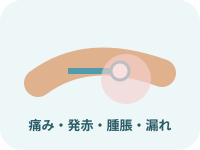
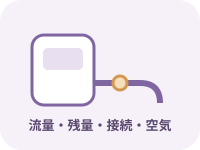
観察頻度は薬剤、投与経路、患者状態、開始・速度変更直後かどうかで変える。循環作動薬、インスリン、抗凝固薬、鎮静薬などは薬剤固有の効果・副作用を追加する。
合併症と初期対応
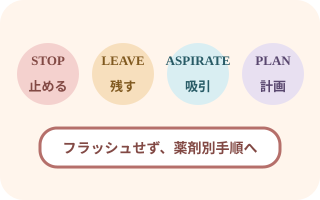
血管外漏出は「止めて、流さない」
疼痛、腫脹、冷感・熱感、皮膚色変化、滴下不良を認めたら投与を止める。
カテーテルをすぐ抜去せず、フラッシュせず、薬剤を特定して院内手順へ。
- 浸潤・血管外漏出：投与停止、応援要請、薬剤・範囲・症状を確認。吸引や解毒薬、温冷罨法は薬剤別手順へ
- 静脈炎：疼痛、発赤、熱感、静脈に沿う硬結。投与とカテーテル継続を再評価
- 感染：発赤、排膿、発熱、悪寒。ルートと全身状態を評価し報告
- アレルギー・アナフィラキシー：投与停止、応援要請、ABCDE、救急対応
- 体液過剰：呼吸苦、SpO2低下、湿性ラ音、浮腫、急な体重増加。投与を見直し報告
- 過少投与・中断：残量と投与経過を確認。自己判断で遅れを取り戻す急速投与をしない
感染と接続部の管理
- 操作前後の手指衛生
- 接続部は適切な消毒薬で十分に擦式消毒し、乾燥させる
- 接続回数を減らし、閉鎖系を保つ
- すべての部品の適合性を確認し、漏れ・破損を防ぐ
- 輸液セット、ニードルレスコネクタ、フィルタは輸液の種類と院内基準・製造元指示で交換
- 血液、脂肪乳剤、プロポフォールなどは一般輸液と交換基準が異なる
引き継ぎと移動
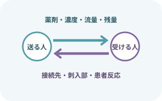
薬剤・残量・接続先まで渡す
薬剤名、濃度、流量、残量、交換予定、投与経路、刺入部、アラーム履歴、患者反応を共有。
移動後は電源、ポンプ高さ、設定、ルート、刺入部を再確認する。
記録
- 開始・変更・中断・終了日時、輸液・薬剤名、濃度、量、経路
- 流量、予定量、積算量、残量、終了予定時刻
- 投与部位、カテーテル種類、刺入部と固定状態
- 患者のバイタルサイン、体液状態、薬効・副作用
- アラーム内容、原因、対応、中断時間、再開後の状態
- 血管外漏出などの異常、範囲、薬剤、初期対応、報告先
- シリンジ・バッグ・ルート交換とダブルチェック
出典
- PMDA「医療安全情報」
- FDA「Infusion Pump Risk Reduction Strategies for Clinicians」
- FDA「Infusion Pumps」
- ISMP「Guidelines for Optimizing Safe Implementation and Use of Smart Infusion Pumps」2020
- NICE「Intravenous fluid therapy in adults in hospital」
- CDC「Intravascular Catheter-Related Infection: Summary of Recommendations」
- eviQ「Extravasation management – Clinical procedure」